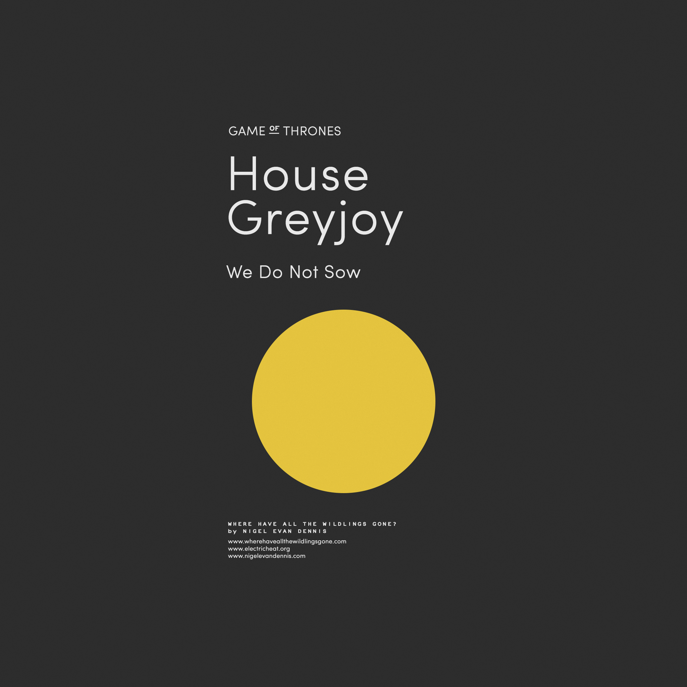
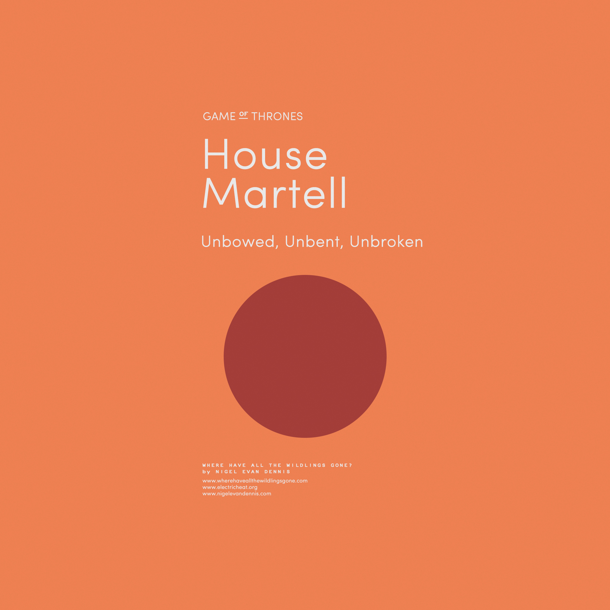

La maison Stark est la maison suzeraine du Nord et son siège se
situe à Winterfell. Leur blason est un « loup-garou » gris sur
champ blanc.
Lieu : Winterfell
Devise : « L'hiver vient »
Personalités :
Eddard Stark
Catelyn Stark
Devise de la maisons Stark
« L'hiver vient »
Maison Arryn
La maison Arryn est l'une des grandes maisons des Sept Couronnes et gouverne la région du Val (The Vale).
Lieu : Val
Devise : « Aussi haute qu'honneur »
Personalités :
Jon Arryn
Robert Arryn
Devise de la maisons Arryn
« Aussi haute qu'honneur »
Maison Baratheon
La maison Baratheon est la plus récente des Grandes maisons des Sept Couronnes, et gouverne la région des Terres de l'Orage (The Stormlands).
Lieu : Terres de l'Orage
Devise : « Nôtre est la fureur »
Personalités :
Robert Baratheon
Cersei Baratheon
Devise de la maisons Baratheon
« Nôtre est la fureur »
Maison Greyjoy

La maison Greyjoy est l'une des grandes familles de Westeros et la suzeraine des Îles de Fer (The Iron Islands) et a son siège à Pyk (Pyke).
Lieu : Îles de Fer
Devise : « Nous ne semons pas »
Personalités :
Balon Greyjoy
Theon Greyjoy
Devise de la maisons Greyjoy
« Nous ne semons pas »
Maison Lannister
La maison Lannister est la maison suzeraine des Terres de l'Ouest et a son siège à Castral Roc. Son blason est un lion d'or rugissant sur champ rouge et sa devise est « Je rugis ».
Lieu : Castral Roc
Devise : « Je rugis »
Personalités :
Tyrion Lannister
Cersei Lannister
Devise de la maisons Lannister
« Je rugis »
Maison Martell

La maison Martell est la maison suzeraine de la péninsule de Dorne et a son siège à Lancehélion. Son blason est un soleil rouge traversé d'une lance dorée sur champ orange et sa devise est « Insoumis, invaincus, intacts ».